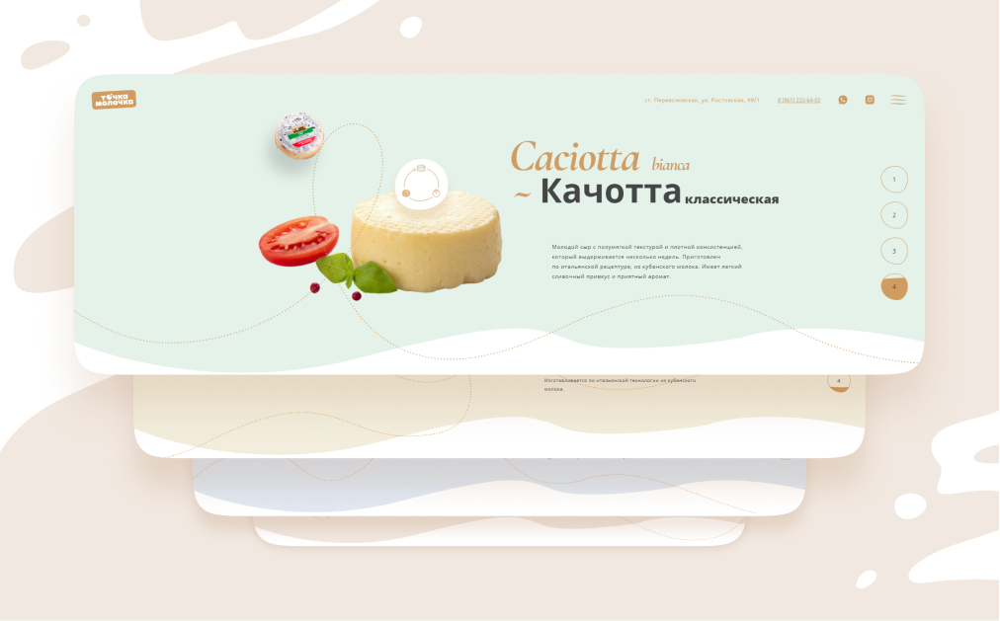
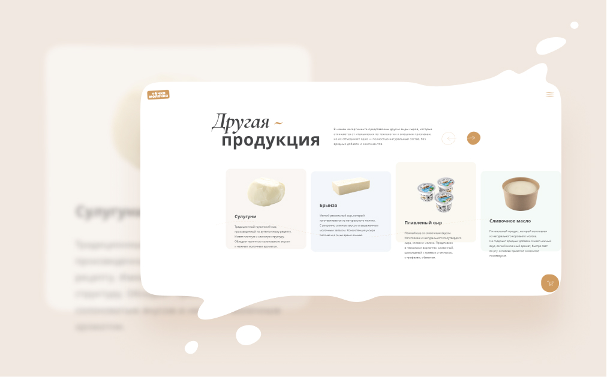
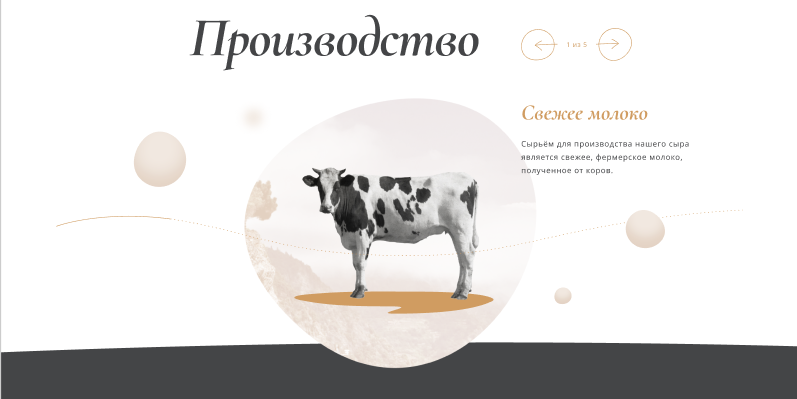
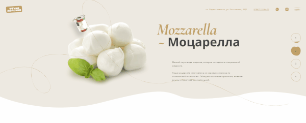

Вы любите сыр? Мы — очень! Поэтому, когда к нам обратилась «Точка Молочка» с предложением разработать для них сайт, посвящённый их сырам, самый усатый сотрудник нашей ореховой компании внезапно превратился в Рокфора из всем известного мультфильма, заполнив офис громогласным «Сы-ы-ы-р!». С трудом удалось привести его в чувства. Отпоили чаями и принялись обсуждать и генерировать идеи.
02
Клиент
«Точка Молочка» — местный производитель высококлассных итальянских сыров. Слоган компании: «Итальянские сыры с кубанским акцентом». Это не пустые слова — за всем производством реально стоят два горячих итальянских синьора, шеф-повар Фабрицио Фатуччи и технолог Андреа Мараско. Продукцию компании можно приобрести в сети супермаркетов «Табрис» и «Магнит Семейный» в Краснодаре, Новороссийске и Геленджике, а также в лавке итальянских продуктов Fatucci Fine Food в Сочи.
Но, не Италией единой (ох, Гарибальди бы с нами не согласился, конечно)! Компания производит и традиционные сыры (брынза, сулугуни, плавленые сыры), которые тоже не хотелось бы обойти вниманием, хоть это и не главное направление производства.
03
Дизайн и вёрстка
В процессе нескольких этапов обсуждения выработали совместно с клиентом визуальный стиль сайта, обсудили поведение элементов и общий состав блоков на странице. Сразу решили, что сайт должен привлекать внимание, выделяться среди конкурентов, быть притягательным и не перегруженным. В визуальной части остановились на простой и узнаваемой концепции.


Что является важнейшим элементом превосходного итальянского сыра? Конечно же, молоко! С самых первых этапов обсуждения концепции мы решили транслировать образ этого продукта. Это и переключатель видов сыров, плавно перетекающий от одного слайда к другому, и плавность линий, что навевает детские воспоминания о льющемся в стакан свежем парном молоке, и преимущественно светлая тема оформления с вкраплениями бежевого и тёмного оттенков, что напоминает один из символов бренда — весёлую коровку. Ну правда, посмотрите, какие они классные.

Другой фишкой Landing Page стала анимация элементов и общая лёгкость. Пунктирная линия следует за путешествием пользователя по разделам сайта, подчёркивает акценты. Этапы производства ненавязчиво сменяются, не перегружают посетителя лишней информацией. Всё это формирует главный фокус — «Точка Молочка» производит вкусный сыр по итальянской технологии под чутким присмотром Фабрицио и Андреа. И не стесняется раскрывать секреты производства.

Что внутри?
Сайт полностью работает под управлением October CMS, быстрой и мощной системы с модульной системой подключения плагинов. Все разделы сайта заполняются из админ-панели, начиная с описания каждого из видов сыра и заканчивая составом рецептов каждого блюда с сырами «Точки Молочки». При желании клиент в любой момент времени может изменять состав блоков страницы, добавлять новую продукцию по мере её появления, вносить изменения в видео, фото и текстовые материалы без необходимости обращаться по таким тривиальным задачам к разработчикам.
Всё очень легковесно и без труда поддаётся последующему масштабированию бизнеса. Профит!
Что в итоге?
«Точка Молочка» получила классный, быстрый сайт, на который хочется заходить снова и снова. Мы же получили море впечатлений и, что уж греха таить, несколько лишних калорий, благодаря буррате, заботливо предоставленной заказчиком для полного погружения в тему.